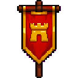
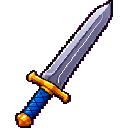
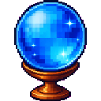
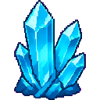
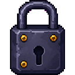
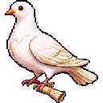

수혁
여러 터미널에서 돌아가는 Claude Code와 Codex 세션을 길드홀 지도 한 장에 모아 보여 줍니다. 어느 에이전트가 일하는 중이고 어느 에이전트가 답을 기다리는지 바로 보이고, 그 자리에서 지시를 보낼 수 있습니다.
기능
세션 하나에 캐릭터 한 명이 배정됩니다.

길드홀 지도
이 Mac의 모든 세션이 캐릭터로 지도에 나옵니다. 작업 중인 캐릭터는 쓰는 도구에 따라 타자를 치거나 망치질을 합니다. 마우스를 올리면 세션 제목, 프로젝트, 마지막 지시가 보입니다.

세션 만들기와 이어 하기
⌘N으로 작업 폴더와 첫 지시를 정해 새 세션을 엽니다. 세션은 전용 tmux 서버에서 돌아서 수혁을 꺼도 끊기지 않습니다. cmux, Orca, tmux에서 쓰던 세션도 대화 기록을 그대로 가지고 옮길 수 있습니다.
대화창
캐릭터 일러스트 옆에 답변과 지시가 대화처럼 쌓입니다. 답변이 작성되는 동안에도 내용이 보입니다. 권한 확인 메뉴는 화살표와 숫자 키로 답하고, Esc로 작업을 멈춥니다.

쓰던 터미널 그대로
tmux, Orca, cmux 세션은 터미널 화면을 직접 읽습니다. Ghostty, Warp, 에디터 내장 터미널처럼 화면을 읽을 수 없는 곳은 대화 기록 파일로 보여 줍니다.
음성 지시
"안녕 수혁아" 다음에 에이전트 이름과 지시를 말하면 그 세션으로 전달됩니다. 끝난 답변은 짧게 요약해 읽어 줍니다. 요약과 음성 합성은 Mac 안에서 처리합니다.
휴대폰 연결
Android 앱이나 휴대폰 브라우저로 지도와 대화를 보고 지시를 보냅니다. 작업이 끝나거나 선택을 기다리면 알림이 옵니다. 새 기기는 QR을 찍고 Mac에서 허용해야 연결됩니다.

결정과 캐릭터 마켓
에이전트가 일한 시간, 끝낸 턴, 커밋 수만큼 결정이 쌓입니다. 결정으로 새 용병을 영입하거나, 다른 사용자가 만들어 운영진 심사를 통과한 캐릭터를 삽니다. 결정은 앱 안에서만 쓰는 재화이고 현금으로 바꿀 수 없습니다.

데이터는 이 Mac에서
세션 상태는 ~/.claude와 ~/.codex의 파일에서 읽습니다. 밖으로 나가는 통신은 휴대폰 연결을 켰을 때의 Cloudflare 터널, 결정 정산, 업데이트 확인입니다.
캐릭터가 서 있는 곳
상태에 따라 캐릭터가 지도의 다른 구역으로 걸어갑니다.
| 상태 | 구역 | 조건 |
|---|---|---|
| 작업 중 | 왼쪽 작업대 | 답변을 쓰거나 명령을 실행하는 중 |
| 대기 중 | 가운데 선술집 | 답변이 끝난 지 10분이 안 됨 |
| 휴식 중 | 오른쪽 라운지 | 10분 넘게 조용함. 기준 시간은 바꿀 수 있음 |
보스 사냥
쉬지 않고 일한 시간이 5시간 미만이면 숲의 슬라임 왕, 24시간 미만이면 수정 동굴 골렘, 그보다 길면 화염 용왕과 싸웁니다.

캐릭터 32명
궁수, 음유시인, 대장장이, 연금술사, 천문학자, 고양이 마법사, 요리사, 성직자 등


설치
Mac 앱을 먼저 설치합니다. 휴대폰 연결은 필요할 때 추가합니다.
Mac
- Homebrew로 설치합니다. tmux도 함께 설치됩니다.
brew install oyhoyhk/tap/suhyeok - 실행합니다.
suhyeok - Launchpad와 Spotlight에서 찾으려면 링크를 만듭니다. (선택)
ln -sf "$(brew --prefix)/opt/suhyeok/수혁.app" ~/Applications/수혁.app
Claude Code나 Codex CLI가 설치되어 있어야 합니다. Homebrew가 없다면 brew.sh에서 먼저 설치하세요. 새 버전이 나오면 사이드바에 업데이트 버튼이 생깁니다.

휴대폰
- Android 휴대폰에서 APK 파일을 받아 설치합니다. 처음이면 브라우저에 앱 설치 권한을 줘야 합니다.
- Mac의 수혁에서 설정(⌘,)을 열고 모바일 접속을 켭니다. QR 코드가 나옵니다.
- 앱에서 QR을 찍습니다.
- Mac에 뜬 창에서 허용을 누르면 연결됩니다.
iPhone은 앱 없이 씁니다. 2단계의 QR을 카메라로 찍으면 브라우저에서 같은 화면이 열립니다. QR은 한 번만 쓸 수 있고, 연결된 기기는 같은 설정 화면에서 끊을 수 있습니다.